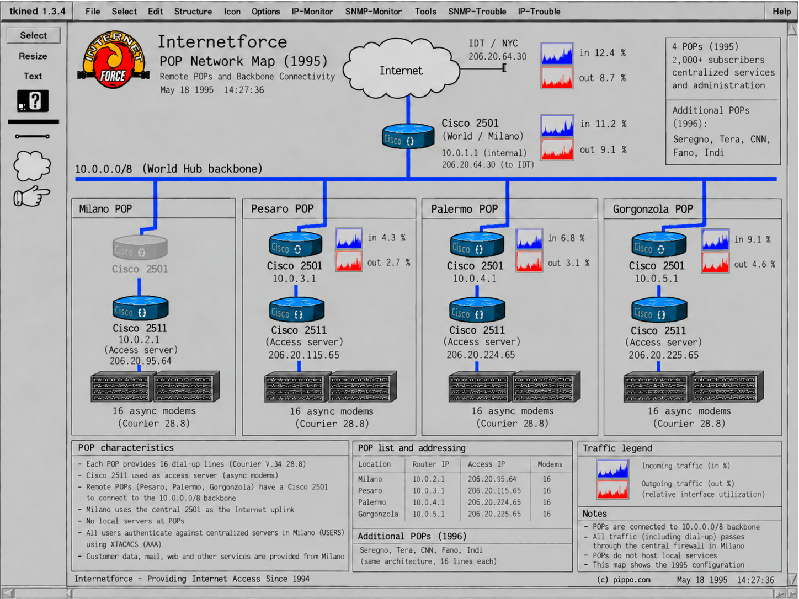
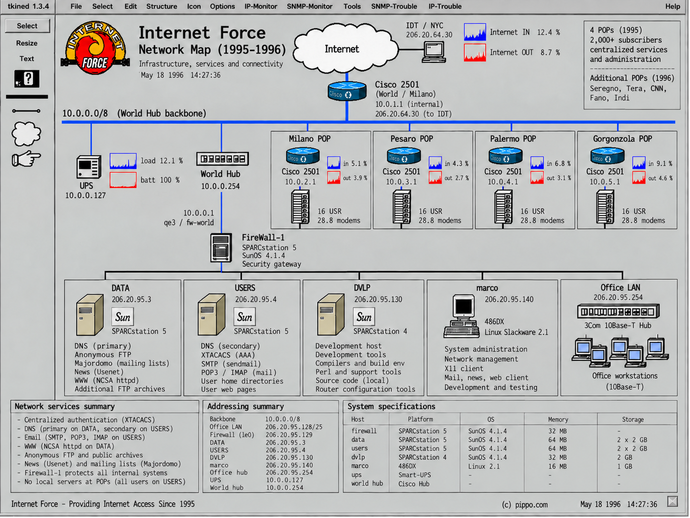
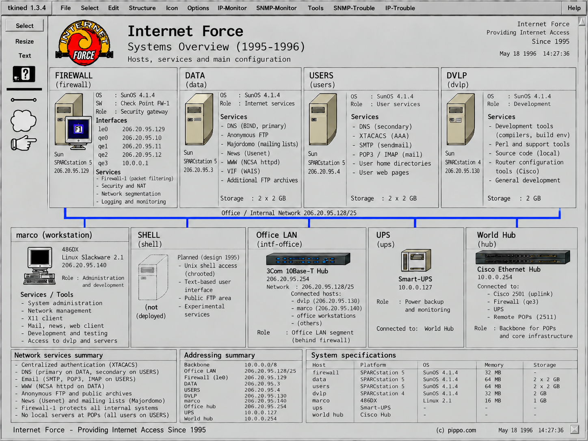

Internet Force 1995–1996
Explore Internet Force
Internet Force was one of Italy's early commercial Internet service providers, active in 1995–1996. Its infrastructure combined a structured routed IP network, Unix systems, Cisco equipment and distributed Points of Presence in a technically advanced architecture for a small ISP of the period. These interactive maps reconstruct that network from surviving original technical material.
Build an Internet Force POP
The educational path that starts from freshly installed systems and follows the real configuration steps to a working provider.
Explore the network
Three reconstructed 1995 maps: select a highlighted device or system to open its configuration or technical page.
-

POP Network MapCentral World/Milano uplink; Milano, Pesaro, Palermo and Gorgonzola POPs. -

Network MapSynthetic view of the network: IDT uplink, firewall, servers, workstation and POPs. -

Systems OverviewCentral and office systems: FIREWALL, DATA, USERS, DVLP, marco, Office LAN.
The maps reconstruct the infrastructure by correlating surviving original technical material, including network and system configurations, monitoring maps, DNS records and Cisco configurations.
Want to explore the archive, files, configurations and preserved materials directly? Visit the Internet Force GitHub repository.
Historical context
Internet Force was not built simply as a concentration of modems attached to individual systems. Its network was designed as a structured routed IP infrastructure, with Cisco routers and access servers, centralized Unix services, authentication, firewalling, monitoring and geographically distributed POPs. This was a very different approach from the more organically grown “spaghetti modem” configurations inherited from some BBS environments.
Marco Iannacone was Internet Force's system & network administrator and contributed directly to designing, building and operating the infrastructure. Part of the expertise used in the project came from technical training with Xpert Unix Systems in Israel. The network architecture, IP addressing and people and workflow context are documented in the technical material.
Internet Force was also the first provider on which Iannacone hosted his personal domain, pippo.com, in 1995.
- Historical notes — Xpert UNIX Systems, the Tel Aviv training period and the organisational context.
- How we learned the Internet — competence, autonomy and RTFM.